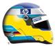

|


Visi komentarai priklauso autoriams. Mes neatsakome uþ jø turiná.
| Katonas (Mindaugas) | Paraðyta: 2008/11/26 16:33 Atnaujintas: 2008/11/26 16:33 |
Veteranas   Praneðimø: 3583 |
Nu startas tai visad blogai gaunas, dar daþnai pakiða kojà, kad turiu daugiau kuro nei tas pilotas kuris ðalia stovi, ir Ferrariu TC tikriasuiai bloga yra
 ratai per daug prasisuka, be to mano pirma pavara labai ilga, beje savo fastest lap pasitikrinau, kirtimø nëra, o bûèiau baudos gavæs ratai per daug prasisuka, be to mano pirma pavara labai ilga, beje savo fastest lap pasitikrinau, kirtimø nëra, o bûèiau baudos gavæs  Ir dar perrþiûrëjau tiek q tiek lenktyniu replay tø pilutø kurie finiðavo, buvo ðiek tiek per aðtriø karpymø  |
| gotmilk?(Vygis) | Paraðyta: 2008/11/26 16:39 Atnaujintas: 2008/11/26 16:39 |
Moderatorius   Praneðimø: 1020 |
na idomu ar i reglamenta itilpdavo su astriu karpymu :) tavo ferro TC tai visai sugriuvus matyt, nes starta darai su TC low del to cia viskas :) darytum su medium norma butu :)
|
| Adomas | Paraðyta: 2008/11/26 17:33 Atnaujintas: 2008/11/26 17:33 |
  Praneðimø: 846 |
Na as savo perziurejau kvalas tai ant ribos buvo bet taisyliu nepazeidziau.Ir per race 6 kart nebuvo kirsta tikrai, nes vaziavau letai ir atsargiai.
Na o del Katonu startu, visi paaiskinimai jo kazkaip keistai skamba. Taip prastai startuot galim tik su tc low.Bet ir kazkas nesirisa, nes jug galima ir su tc medium startuot o paskui pradet vaziuot su tc low. Nu jis cia pats turbut geriausiai zino ka daro  . . |
| Deividas J. | Paraðyta: 2008/11/26 17:37 Atnaujintas: 2008/11/26 17:37 |
  Praneðimø: 131 |
Truputi radau klaideliu Antrojoje kvalifikacijos dalyje. Adomas siaip vairuoja McLaren, o Nerijus Renault, Adomas startavo is 7 vietos, Nerijus is 9, Andrius is 10. Truputi vienas per kita persipine cia yra :)
|
| Dragster | Paraðyta: 2008/11/27 0:51 Atnaujintas: 2008/11/27 0:51 |
V.I.P.   Praneðimø: 175 |
reikejo uz bauda akinius, kad nusipirktu o cia tik
 ispejimas. ispejimas. |
| Egidasas | Paraðyta: 2008/11/27 12:12 Atnaujintas: 2008/11/27 12:12 |
  Praneðimø: 218 |
O kodel geriau vaziuoti su TC low nei su medium?
|
| Vaidas. | Paraðyta: 2008/11/27 12:29 Atnaujintas: 2008/11/27 12:29 |
Moderatorius Praneðimø: 2209 |
Turbut daugiau traukos galima islauzti, bet didesne spino tikimybe :)
|
| gotmilk?(Vygis) | Paraðyta: 2008/11/27 12:34 Atnaujintas: 2008/11/27 12:34 |
Moderatorius Praneðimø: 1020 |
Siaip jo jeigu tvarkingai ir svariai isvazinesi is posukiu tai su low geresne akseleracija gaunasi. As irgi karts nuo karto per kvala panaudoju low tc (dar per lenktynes nesiryztu, nes reiktu tokiu atveju daug testu padaryt) ir ta low tc padeda islosti bent man apie 0,2 kokias dalis :)
|
| vivec (Nerijus) | Paraðyta: 2008/11/27 16:03 Atnaujintas: 2008/11/27 16:03 |
 Praneðimø: 181 |
dragsteri tu ten kaltas toj situacijoj ryshkiai praziopsojai stabdymo tashka ir kaleis i mane o ne ash tau uzkishau trajaktorija... 1 karta jei nzn lesitina keisti trajaktorija ir ash taip padariau.. o ka tu ikalei i mane esi kaltas...
|
| Webster (Andrius) | Paraðyta: 2008/11/27 16:38 Atnaujintas: 2008/11/27 16:39 |
Administratorius   Praneðimø: 2380 |
Leidziama keisti trajektorija jeigu ten nera kito piloto. O kai bandai uzkisineti savo tacke tai toks kaip dragsteris ir pamoko kaip elgtis, gaila kad del to smugio dragas nespejo sustabdyti ir Toma apsuko.
|
| vivec (Nerijus) | Paraðyta: 2008/11/27 17:58 Atnaujintas: 2008/11/27 17:58 |
Praneðimø: 181 |
dar karta isitikinau kad teisejai daro sprendimus sau naudingai Dragas kai ferrari pilotas tai Klumbis nebaus jo... krc pazekit replay 29sec kas netyngit ir pasakykit kad ten kaltas ash ar praziopsojes stabdymo tashka dragas... ir dar pazekit drago pirma posuki kox jis agresyvus jau pirmam posuki galejo ishkirsti kazka tiesiog pasiseke kad buvo tushcia o stabdo taip lyg priesh ji nieko nebutu...
|
| Razor | Paraðyta: 2008/11/27 19:25 Atnaujintas: 2008/11/27 19:25 |
Praneðimø: 583 |
Imesk youtube video. Paziuresim.
|
| Webster (Andrius) | Paraðyta: 2008/11/27 21:01 Atnaujintas: 2008/11/27 21:01 |
Administratorius Praneðimø: 2380 |
vivec (Nerijus)> vat kaip tik del to Minde ir paprase manes ir Bryliaus isnagrineti sita situacija, jis savo nuomones iuo klausimu nereiske.
|
| Dragster | Paraðyta: 2008/11/27 21:37 Atnaujintas: 2008/11/27 21:43 |
V.I.P. Praneðimø: 175 |
uzp.sai jau nerijau su savo nesamonem, visi tau kalti tik ne tu, kas butu jeigu butu gal nenagrinek, uzkisai konkreciai ir nep..sk cia proto sugadinai ne tik man race bet dar ir mikutai, butum sustabdes, nebutum ,cia oras yra, kas butu jei butu.per velai bandei duris uzdaryt ir i priekini rata su savo galiniu ipisai ir ispisai kas cia sudetingo banzai manevras
pasipiktines tokiu sprendimu teiseju. |
| vivec (Nerijus) | Paraðyta: 2008/11/27 21:44 Atnaujintas: 2008/11/27 21:44 |
Praneðimø: 181 |
dragai dragai pazek kas suktelejo vaira i mane shone vietos dar buvo...
http://www.failai.in/F8EC113B3A/Untitled0.wmv |
| Webster (Andrius) | Paraðyta: 2008/11/27 21:44 Atnaujintas: 2008/11/27 21:44 |
Administratorius Praneðimø: 2380 |
Is vaizdo klipo galit pasziureti 3.29 sekunde ir patys nuspreskit, rakursas nepats palankiausias bet uztenka.
|
| Dragster | Paraðyta: 2008/11/27 21:52 Atnaujintas: 2008/11/27 21:58 |
V.I.P. Praneðimø: 175 |
ne tu ufonautas rimtai galvoji lekiu ir galvoju gal koks asilas akiniu neturi ir uzkis pries pat nosi. ir gal palei sienele isvis vaziuot kad tu turetum daugiau vietos
galetum filmukus kurt lrc nes matau neblogai sekasi ir virsaus ir nuo pradziu tada parodyk |
| vivec (Nerijus) | Paraðyta: 2008/11/27 21:59 Atnaujintas: 2008/11/27 21:59 |
Praneðimø: 181 |
dragai tu mane ir pradedi uz.ist kaltas esi toj situacijoj nes per daug agrsyviai vaziavai ir lindai ten kur niekas nelenda ka tu mastei visus 3 aplenkt ant to posukia ir uzkirst kitiem kelia o jei kas pasimaishytu pvz kaip ash sakytum ash vaziavau savo trajaktorija ir man po.ui na.ui kad dar kiti vaziuoja...
|
| Dragster | Paraðyta: 2008/11/27 22:09 Atnaujintas: 2008/11/27 22:09 |
V.I.P. Praneðimø: 175 |
ble tu nesigilink mastei nemastei kazkoki ora cia reguliuoji kas butu jei butu, incidentas yra ir viskas pramiegojai bloka ir uzkishai.
jei diedukas neturetu pautu irgi butu bobute ir ka? |
| Andrius (brylius) | Paraðyta: 2008/11/27 22:53 Atnaujintas: 2008/11/27 22:54 |
Administratorius  Praneðimø: 3314 |
geda jums, nes gincyjates del incidento, kuris jau BUVO ir nieko cia nepakeisi.
Mano nuomone tokia, sita situacija labai kebli...Visu pirma dragas gal ir praziopsojo stabdyma, taciau butu spejes sustabdyt iki to, kai reikejo sukt vaira i posuki ir tikrai nebutu nuneses nieko. Nerijus, nesizvalgo i sonus, ir tikriausiai bandydamas isvengt kontakto su Tyota uzsuko i desini sona, ten buvo Rytis...ivyko kontaktas. Todel manau, kad Nerijus sioj situacijoj kaltas, nors ir jis mato situacija kitaip. Rytis jau buvo salia Nerijaus, paskui uzsuko staigei vaira... |
| Razor | Paraðyta: 2008/11/28 0:13 Atnaujintas: 2008/11/28 0:13 |
Praneðimø: 583 |
Situacija nera visiskai akivaizdi, kazkiek yra lenktyninio incidento, taciau jeigu vistik reikia kazkuri pripazinti kaltu, tai tas butu Ferrari pilotas.Taskas.
Jis ivaziavo i Renuskes sona (reglamente turetu buti punktas apie ivaziavimus i sona). Ir jis turejo pakankamai vietos desineje kad neivaziuotu i Renuske.Netgi pasuko vaira link Renault! Tuo tarpu Renuske apvazinejo priekyje esancius pilotus ir nieko tragisko nedare. Kas ivaziuoja, tas ir kaltas.Ypac kai vietos buvo pakankamai. |
| Dragster | Paraðyta: 2008/11/28 3:02 Atnaujintas: 2008/11/28 4:06 |
V.I.P. Praneðimø: 175 |
tu pazek normaliai visa epizoda o paskui cia destyk eksperte razor, uzkiso tai ka man daryt :DD i tvora trenktis? :D as su gamepad vaziuoju tai ir tiesiojoj buna kad lyginu bolida i viena ar kita puse,as net nespejau sureguot kaip jis paveluotai uzkiso,kazkoks judesys inercinis.cia greitis dar nemazas buvo,ko nesimato, net nesitikejau kad ackarikus pamirso uzsidet zmogus.tas replay iskirptas ir tik maza dalis o ten reik ziuret visa epizoda is virsaus, juknevicius aisku pazejo kas jam kazkiek naudingiau butu ir idejo toki epizoda.
http://img123.imageshack.us/img123/9519/incrk8.jpg http://img149.imageshack.us/img149/6266/in1sn1.jpg http://img149.imageshack.us/img149/9208/in2oh2.jpg |
| Egidasas | Paraðyta: 2008/11/28 8:59 Atnaujintas: 2008/11/28 8:59 |
Praneðimø: 218 |
Nu as tai izvelgiu abipuse kalte, manau teisejai turetu taip ir ivertint. O be to argi didelis cia skirtumas? Ir taip argumentuotai abu kalba, kad susidaro ispudis kad jie visada kontrolieuoja savo bolido trajektorija ir vaziuoja planuotai. Nu sorry bet tokiais greiciais vaziuojant ir kai trasoje toks veiksmas as asmeniskai tikrai nesugebu suplanuot kiekvieno bolido trajektorijos centimetro...
|
| Dragster | Paraðyta: 2008/11/28 9:53 Atnaujintas: 2008/11/28 9:53 |
V.I.P. Praneðimø: 175 |
zinai kai aukoji laisva laika testam, ir kazkoks obuolys uzsiziopsojes iskala ir dar skundus raso kad tu kaltas, tai tada jau bbbd,uzverda shudas iki galo isiaiskint...visko buna nieko nesakau atsiprasai jei kazka priveli.
is virsaus labai gerai matosi kokiu kampu pakeista trajektorija. |
| Razor | Paraðyta: 2008/11/28 10:27 Atnaujintas: 2008/11/28 10:27 |
Praneðimø: 583 |
Dragster> neabejoju kad tu irgi darydamas tuos screenshotus parinkai momenta kai Renault buvo labiausiai pasisukusi i sona (nors poto ishsitiesino). Bet jeigu tu atmerktum savo akis, ir paziuretum kas tau sakoma, suprastum kad LAISVOS VIETOS pas tave buvo sociai. Todel tai nera uzkisimas. Kai uzkisa, tai laisvos vietos nelieka. O cia jos liko sociai. Kaltas tu ir viskas cia aisku.
O vaziuoti su visokiais gamepadais tai manau isviso turetu buti uzdrausta, jeigu paciam nedaeina kad cia ne vaziavimas o velimasis i tokias visokias situacijas.Nusipirk vaira ir vaziuok kaip priklauso. |
| Dragster | Paraðyta: 2008/11/28 11:11 Atnaujintas: 2008/11/28 11:40 |
V.I.P. Praneðimø: 175 |
tu nepisk man proto vaikeli gerai ka as turiu daryt.o savo nuomone isreiskei ir uztenka,nesiruosiu as cia su vaikais kurie neturi ka veikt ir nezino situacijos kazka aiskintis.
ten sekundes reikalas visas tas manevras,siaura trasa, tu bent ziurejai replay, kad cia destai nesamones.tarp kitko pazek kiek incidentu turejo nerijus su vairu ir as per praejusius etapus, kur nerijus pries kitus irgi lipde filmukus, ir niekad jo zodziais nekaltas.jei smegenu nera tai ir vairas geriausias nepades. as parodziau kokiu kampu veiksmas vyko ir tiek. p.s. gali atsakymo ir nerasyt matosi,kad i viena puse eismas eina,bus juoda o tu sakysi balta vistiek :)) tema su tavim baigta. |
| Arvydas | Paraðyta: 2008/12/5 19:51 Atnaujintas: 2008/12/5 19:51 |
  Praneðimø: 1 |
viska paskaiciau ir matau tik viena: blogiausia yra tai kad zmones nei kiek nenori aiskintis situacijos, o tik vienas ant kito keikiasi, o kad vip zenkliukas yra prie tavo pavadinimo, nereiskia kad nereikia gerbti kitu nuomones. pats mazvaikis esi toks pat, kaip ir tas kuris tau pasako. pats vazinejau ir zinau ka reskia kaip kas nors atsitinka, ir kaip sudas verda, bet tai neduoda teises tau keiktis ant tu kurie bando isreiksti mintis. nes ir tu tas mintis reiski taip pat ir gan drastiskai. pagalvok...
|